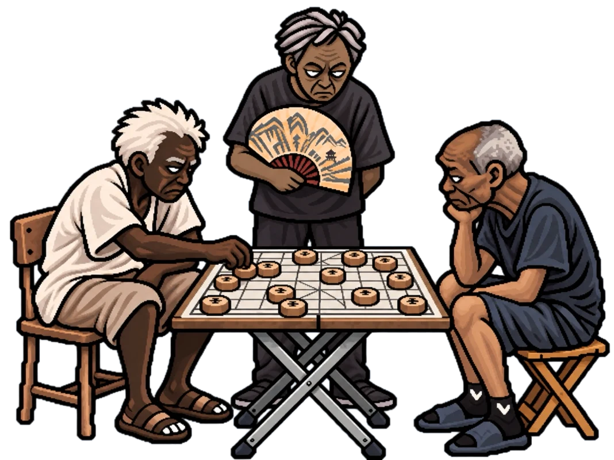
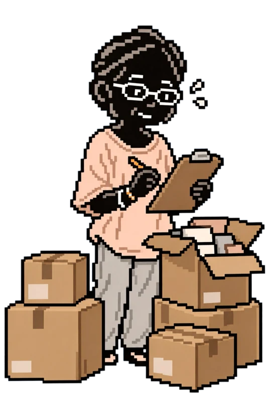

Prototype: My Grandfather
The man in black is based on my grandfather.
When I was a child, I often saw him playing chess with people in the neighborhood.

Prototype: A Shopkeeper I Remember
She is the person I remember most clearly from this street.
Her shop is gone now. When I returned, I could no longer find her there.

Prototype: My Younger Self
The student is based on me when I was in primary school.
I used to walk along this street every day on my way to and from school.